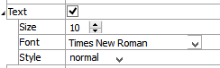
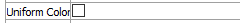
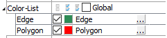
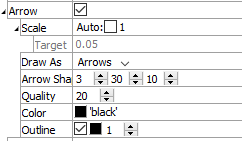

Labels
Description
One or more user-defined labels that have been created using the label command.
Attributes
Text
Controls the appearance of text used to identify the plot item in the plot.
Text: Show (checked) text used to display the plot item in the plot.
Size: Set the size of text in the legend.
Font: Set the font face used for the text.
Style: Set the text style (the options are normal, bold, italic, bold-italic).
Uniform Color
Set to make all items the same color. Otherwise they will be colored by item.
Uniform Color: set (checked) something ????
Color-List
Configure the list used to color the plot item.
Color-List: Set which items on the list are displayed. The field contains “Select None”, “Select All”, and “Invert Selection” buttons, respectively. These are followed by the “Global” checkbox, which, if checked, causes the current pairing of colors and labels to be used globally across all plots. For example, if a specific, consistent color is desired for group names that appear in all plots, this setting will be useful.
This field is also a container for the items on the list.
[Item]: When the list contains one or more items, they are listed beneath the main field. The item’s name is used as a label for the field. If checked, the item is displayed. Next a color control appears to set/indicate the item color. The current label for the item appears next; initially this defaults to the item name. The settings button (…) may be used to set an “alias” that can be used instead of the item name when displayed in the legend.
Arrow
Set the appearance of arrows in the plot item.
Arrow: Display (checked) arrows in the plot item.
Scale: Set the size of arrows in the plot. If “Auto” is checked, this setting is determined automatically, and the additional control for Target is activated.
Target: Set the target size of arrows when the “Auto” setting is used for Scale; the value represents a percentage of screen width.Draw As: Set the shape used to render the item (options are “Arrows”, “Lines”, “Disks”).
Arrow Shape: Specify the radius of the shaft, length of the head, and radius of the head (respectively) — in terms of percentage of arrow length.
Quality: Specify the “roundness” of the arrow or disk. Larger values are rounder, but may take longer to render.
Color: Specify the color of the item.
Outline: Show (checked) the item outline, and set its color and width.
Legend
Set display of the item in the plot legend. All plot items, at minimum, have a Title attribute.
Legend: Show (checked) all information about the plot item in the legend.
Title: Show (checked) the title of the plot item in the legend. The “Alias:” field may be used to specify a custom title for the item.
Size: Set the size of text in the legend.
Font: Set the font face used for the text.
Style: Set the text style (the options are normal, bold, italic, bold-italic).
Color: Set the text color.
Beneath Title, the Labels plot item also provides controls in Legend for Color-List (which provides sub-controls for Label and Heading), Maximum, Scale, and Vector. The sub-attributes of each are the same as those for Title.
| Was this helpful? ... | UDEC © 2018, Itasca | Updated: Mar 15, 2024 |